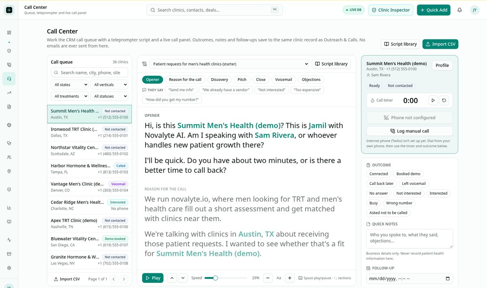
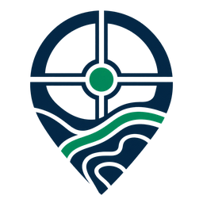
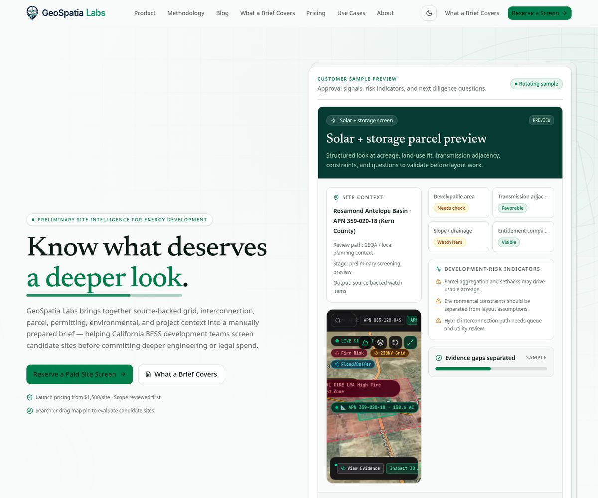

These aren't robotics projects. They show the same habits an operator role needs: running complex consoles, watching telemetry, and keeping data clean enough to trust.
RCC
Revenue Command Center
Novalyte AI · internal operator console
I built a single control plane for clinic acquisition, demand intelligence, workforce exchange, revenue telemetry, and platform administration.

Maps toOperating complex systems through consoles · monitoring telemetry and dashboards
SQL
End-to-end data hygiene
Novalyte AI · Zendesk
At Novalyte I owned SQL data hygiene end to end (cleaning, deduplication, matching), keeping the data that feeds AI workflows accurate and consistent. At Zendesk I ran recurring CRM data-hygiene and validation cycles.
Maps toData quality & annotation rigor · consistency-critical work
LLM
AI automation workflows
Novalyte AI
I engineered AI-enabled workflows for lead capture, enrichment, qualification scoring, routing, and CRM writeback, using LLM workflows, structured outputs, and tool calling.
Maps toUnderstanding how data shapes AI model behavior · structured outputs

Geospatialabs
Founder · independent prototype
I built and deployed an interactive decision-support prototype that maps regional clinic capacity and local demand signals, with data normalization pipelines, custom map visualizations, and query interfaces in JavaScript, Python, and SQL.

Maps toData normalization pipelines · spatial data